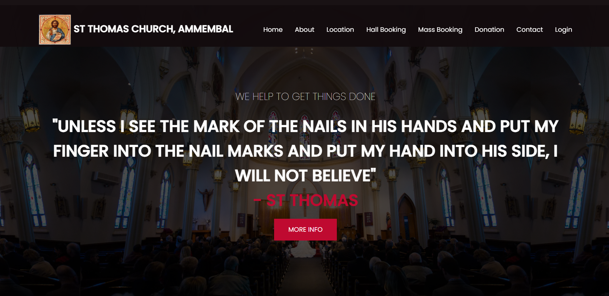
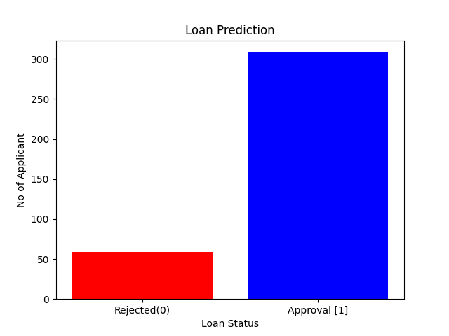

Objective: To develop various administrative, organizational an communication processes
within a church or religious institution. Organize and manages church events, meetings and
programs with ease.
Tools Used: HTML, CSS, Javascript, PHP, BootStrap, SQL.

To build predictive model that determines the likelihood of a loan applicant getting
a loan approval. By utilizing various techniques for efficient data preprocessing and exploration,
and applying Decision Tree Classifier and Naive Bayes Algorithm.
Tools Used: Python, Pandas, Numpy, Sklearn, Matplotlib.
